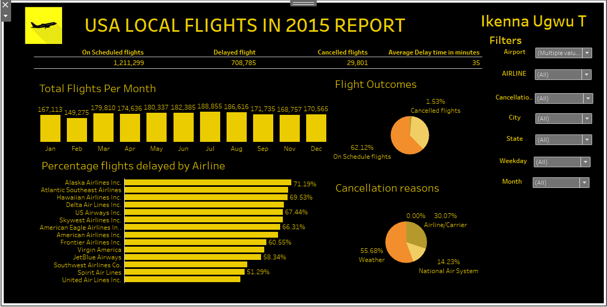
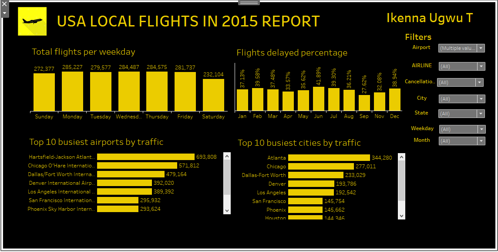
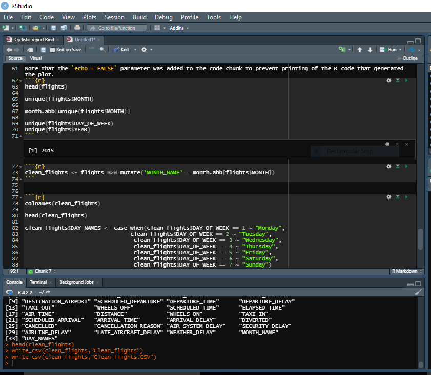

US Flights Analysis
BACKGROUND
This project aims to conduct an in-depth analysis of local flight activities in the United States in 2015. The dataset used for this analysis was obtained from Quantum Analytics and imported into a centralized analytics dashboard solution.
GOAL
The primary objectives of this analysis are to gain insights into flight cancellations, identify areas for improvement, and provide guidance for flight planning and investments within the aviation industry.
METHODOLOGY
The dataset was sourced from a Google Drive account and underwent cleaning and preprocessing using R in RStudio due to its large size. Cleaned data was then exported to Tableau, where interactive dashboards incorporating appropriate graphs, charts, and cards were created.
  KEY INSIGHTS
- Flights: Total flights analyzed was about 2 million of which 62% of them were on schedule while 36% and 1.5% were for delayed flights and cancelled flights respectively. There was an average delay time of 35 minutes.
- Cancellation Reasons: Of the about 30,000 cancelled flights, 56% of them were due to adverse weather conditions, 30% by airline issues, and 14% caused by the national air system.
- Monthly Trends: On average, there were about 175,000 flights per month ranging from 189,000 in July to 149,275 in February. In June, 42% of the flights were either delayed or canceled, while September had 72% of flights operating on schedule.
- Daily Trends: Overall, there were about 280,000 flights occurring each day from Sunday to Friday, with Saturdays having the least at 232,000.
- Top Performers: In terms of traffic, Hartsfield-Jackson Atlanta International Airport and Chicago O'Hare International Airport topped the list with 693,000 and 570,000 flights recorded respectively.
RECOMMENDATIONS
- More collaborations should be done with weather scientists before scheduling flights to avoid delays or cancellations.
- Further investigations should be done to determine the contributing factors to airline issues and implement corrective measures.
- In February and on Saturdays, consider lowering the price of the ticket to attract more passengers.
- When considering business in the aviation industry, prioritize top airports or cities with high traffic volume, such as Hartsfield-Jackson Atlanta International Airport and Chicago O'Hare International Airport.